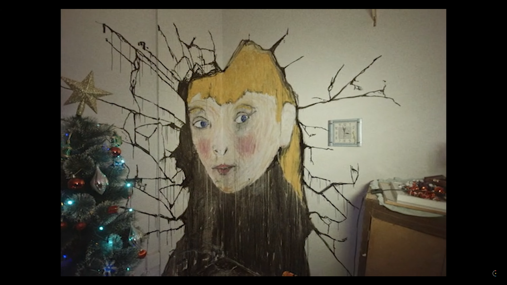

The Wolf House
2022.07.26
Overview
From filmmaking duo Joaquín Cociña and Cristóbal León, comes The Wolf House (La Casa Lobo), the pair's first feature length film. It tells the story of Maria, a young woman who takes refuge in a house in southern Chile after escaping from a German colony. This retrospective covers the film's animation, themes, and some of the details behind its creation.
